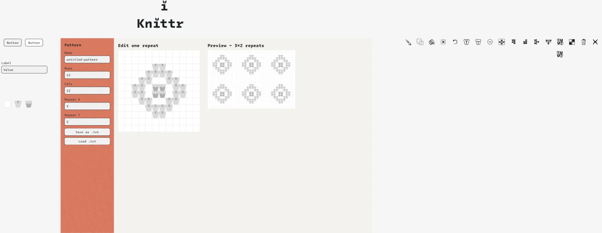
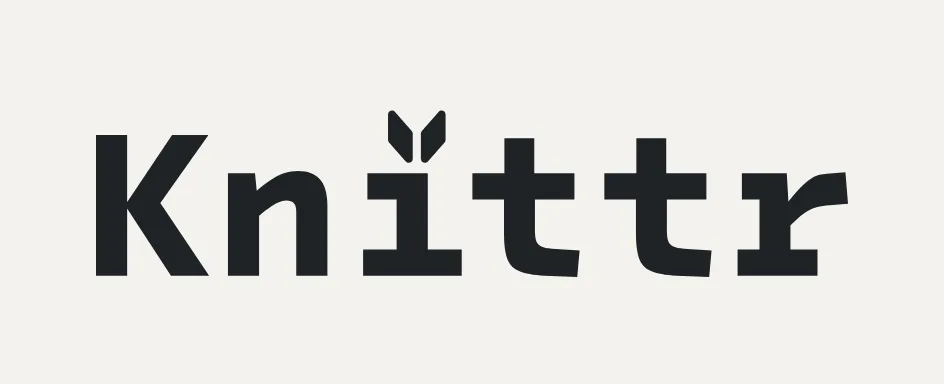
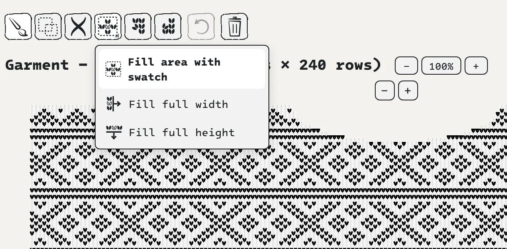

Knittr


Min rolle
Jeg er designer, ikke utvikler, og det har ikke dette prosjektet endret på. Knittr er vibe-kodet: all koden er skrevet av AI-assistenten Claude. Min jobb var den samme som designerens alltid er: å bestemme hva verktøyet skal være, kjenne etter om det føles riktig, og si fra når det ikke gjør det.
Jeg designet komponentene, ikonene og logoen i Figma, og styrte hver eneste endring gjennom en samtale. Appen og skjermbildene er på engelsk, slik den ble laget.
Knittr er et nettbasert verktøy for å tegne strikkemønstre. Du lager små mønsterruter, swatcher, og maler dem utover et plagg i riktig strikkefasthet, med økninger og fellinger. Mønsteret kan vises som et klassisk strikkediagram eller som strikkede masker.

Før Knittr
Før dette prosjektet tegnet jeg strikkemønstrene mine i Excel: én celle per maske, farget for hånd, med fellinger markert som røde linjer og notater om hva som skal strikkes skrevet rett inn i cellene.
Det fungerer, men regnearket vet ingenting om strikking. Det kan ikke gjenta et mønster bortover, vise hvordan det blir seende ut strikket, eller regne om centimeter til masker. Knittr er verktøyet jeg selv manglet.

Utgangspunktet
Prosjektet startet som et nakent skjelett: et rutenett der du klikker deg gjennom rett, vrang og tom maske, og en forhåndsvisning som gjentar mønsteret. Det virket, men det var ikke mitt. Det første jeg spurte om var:
«Is there any way for you to make components that I can then design and then you implement the changes?»
Svaret ble arbeidsmåten for resten av prosjektet.

Arbeidsflyten
Claude er koblet direkte til Figma-filen min. Det ga en enkel sløyfe som vi gjentok gjennom hele prosjektet:
- Jeg beskriver hva jeg trenger, for eksempel ikoner til verktøylinjen.
- Claude lager tomme komponenter i Figma, med en sirkel som plassholder.
- Jeg designer dem, på samme måte som jeg designer alt annet.
- Jeg skriver «done», og Claude henter designet ut av Figma og inn i appen.
Komponentene Claude bygde fra den første koden, restylet jeg i Figma: fonten, den terrakotta sidemenyen og de håndtegnede, ujevne kantene. Så ble endringene mine oversatt tilbake til kode.



Ikonene
Alle ikonene er tegnet av meg i Figma, med de samme ujevne strekene som resten av uttrykket.
Det tekniske ble aldri mitt problem. Da to av ikonene brukte hvite flater som mellomrom, og da Figma eksporterte ødelagte linjer fra søppelbøtta mi, fant Claude løsninger uten at jeg måtte endre designet.
Logoen tegnet jeg også, sammen med en liten versjon til fanen i nettleseren.

Design med magefølelsen
Det som overrasket meg mest, var hvor lite jeg trengte å forklare. Jeg designet ved å reagere, slik jeg ville gjort med en fysisk prototype. Korte, ufiltrerte tilbakemeldinger ble til konkrete endringer.
Ingen av dem krever at man vet hvordan koden fungerer. De krever at man vet hvordan det skal føles.
- «I think the edit one repeat is a bit too stylized»
En bryter mellom strikkediagram og strikkede masker. - «The colors of the stitches should have a super soft gradient … so a knit on top of purl doesn’t disappear»
En nesten usynlig gradient i hver maske. - «They work now but they can fill the squares more»
Større ikoner i knappene. - «I honestly think 6 colors is max for anyone to knit with»
En fast palett på seks garn, der hvert garn kan endres. - «The logo is a bit big now»
En mindre logo. - «It is annoying trying to remove or add rows»
− og + på alle kanter av rutenettet.
Vendepunktet
Midtveis la jeg merke til noe jeg kjenner fra strikkingen selv:
«A knitting pattern rarely repeats in the y axis.»
Den første versjonen gjentok mønsteret både bortover og oppover, og det så aldri ut som et ekte plagg. Så vi gjorde om hele verktøyet. Rutenettet ble en swatch-maker, og et nytt plaggvindu kom til, der swatchene males ut som bord og felt.



Plagget bygges i lag: en grunnfarge, swatcher malt ut som områder, enkeltmasker oppå, og til slutt formen. Swatchene er koblet til plagget, så når du endrer en swatch, endres den overalt den er brukt.
Økninger og fellinger fikk sin egen løsning, foreslått som en grov idé fra min side:
«This can be done by making every row above or below blank, if that makes sense.»
Det gjorde det. Du drar langs kanten av plagget, og maskene over eller under forsvinner. Slik tegner du en halsåpning eller formen på et erme.
Setesdalskofta på bildene har jeg tegnet selv i Knittr: sju swatcher, fra vrangbord og bunnbord til lus og kross og kringle, malt ut som bord over plagget.


Følelsen av strikk
Maskene er formet etter vektorene jeg tegnet i Figma. Hver maske har en lys og en mørk side av garnet, radene overlapper, og den lyse delen ligger alltid oppå den mørke. Det gir illusjonen av strikk.
Strikkefastheten styrer proporsjonene, så du ser mønsteret slik det faktisk blir strikket, mens diagramvisningen holder seg til klassiske, kvadratiske ruter.
Hva jeg tar med meg
AI flytter grensen for hva jeg kan prototype alene, men ikke for hvem som tar beslutningene. Claude kunne bygge nesten hva som helst, men visste ikke at et strikkemønster sjelden gjentas i høyden, at seks farger er nok, eller at logoen var litt for stor.
Det var heller ikke alltid riktig første gang. Da jeg ba om en smalere meny, ble den like bred, og strikkefastheten påvirket først begge visningene. Det var å se resultatet og reagere som rettet det opp. Den evnen, å kjenne at noe er feil før man vet hvorfor, er den jeg vil fortsette å bygge på som designer.